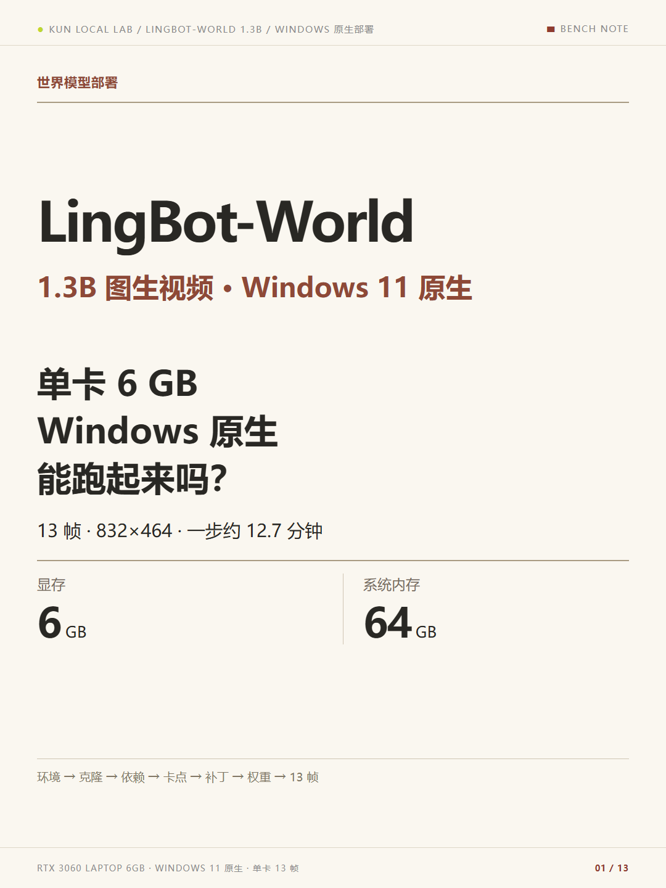
01 / 13 · LingBot-World 1.3B 部署：6GB 笔记本 Windows 原生跑通图生视频
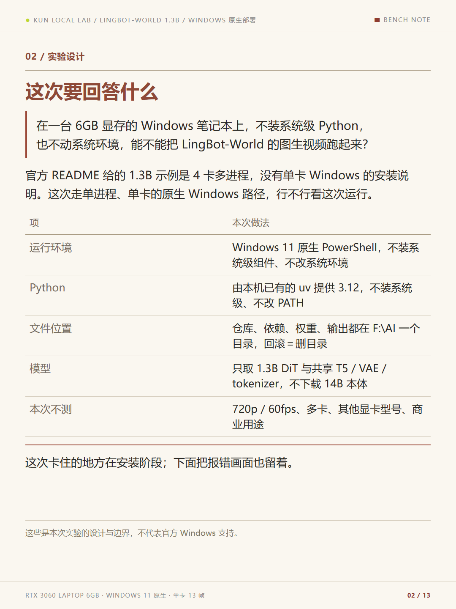
02 / 13 · 这次要回答什么
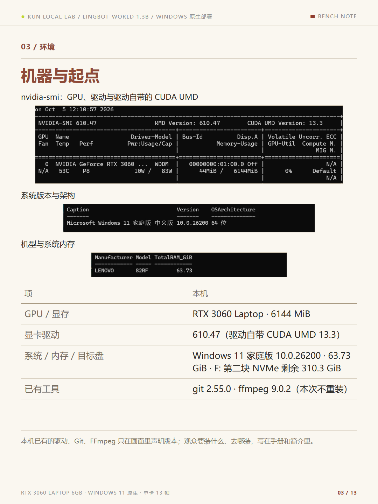
03 / 13 · 机器与起点
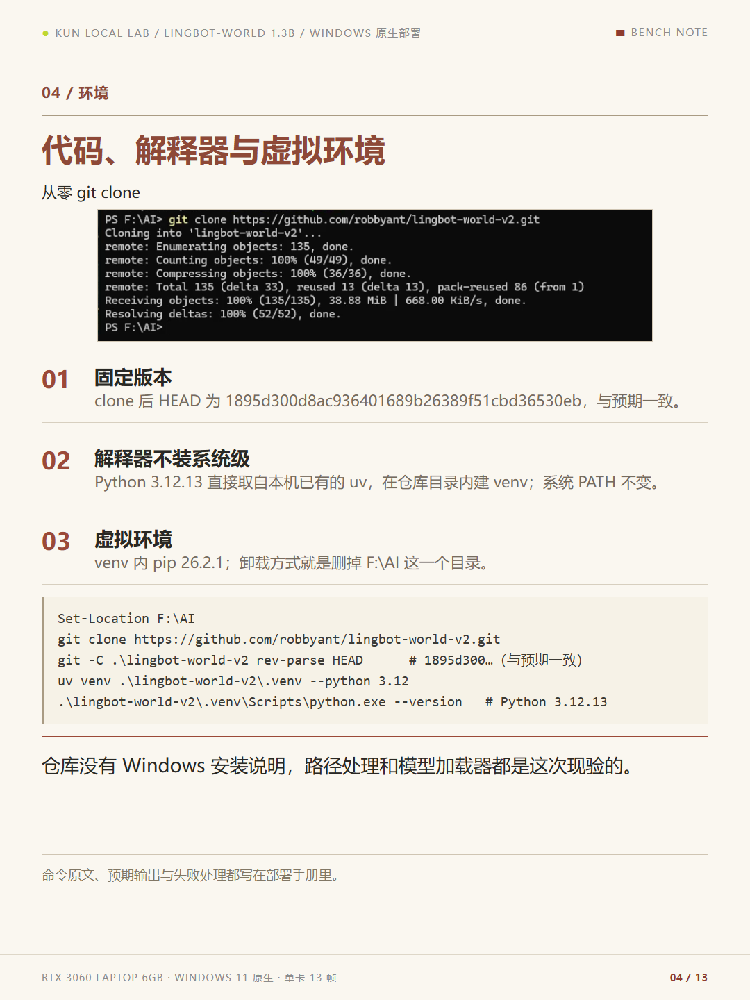
04 / 13 · 代码、解释器与虚拟环境
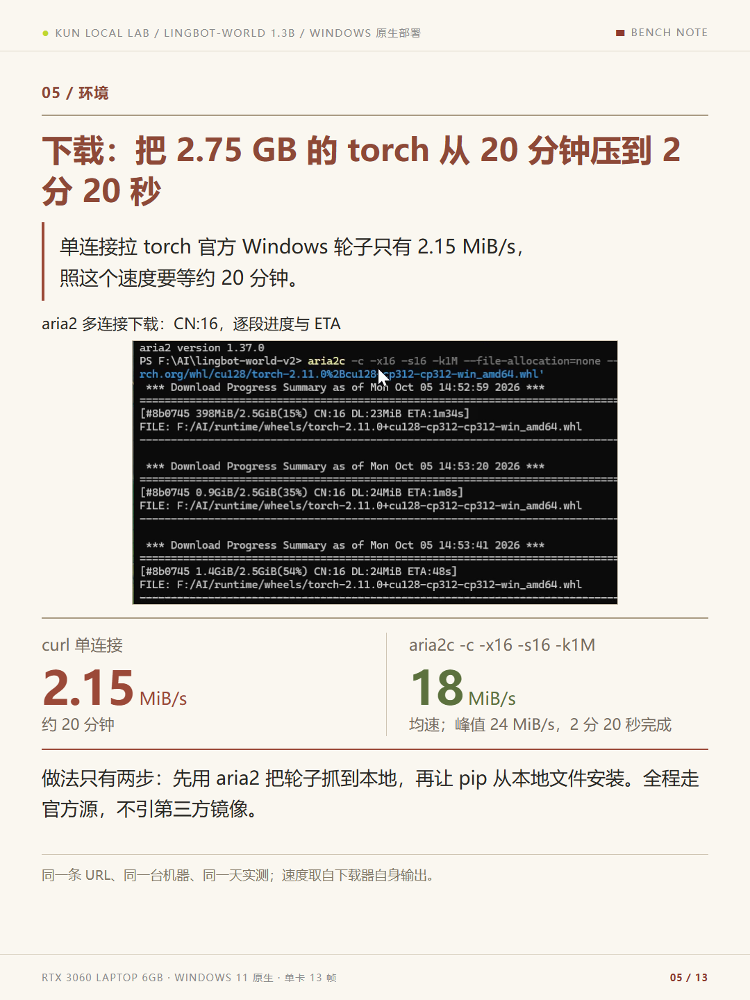
05 / 13 · 下载：把 2.75 GB 的 torch 从 20 分钟压到 2 分 20 秒
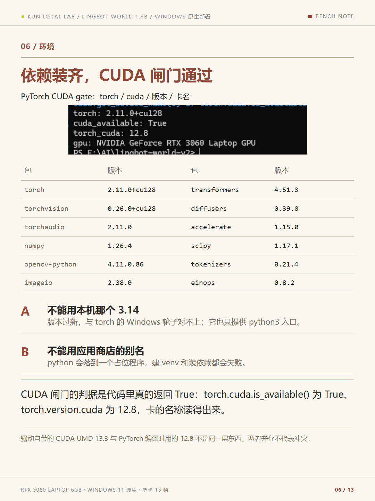
06 / 13 · 依赖装齐，CUDA 闸门通过
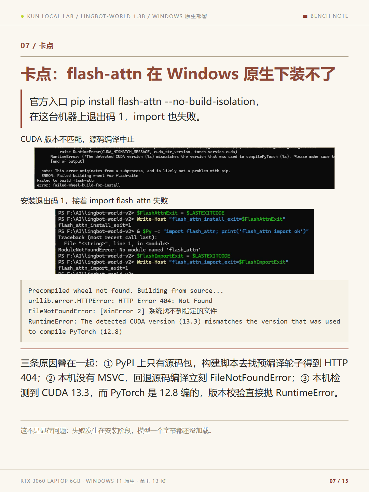
07 / 13 · 卡点：flash-attn 在 Windows 原生下装不了
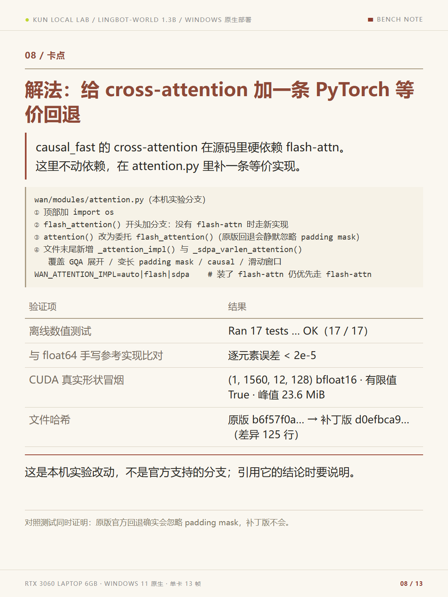
08 / 13 · 解法：给 cross-attention 加一条 PyTorch 等价回退
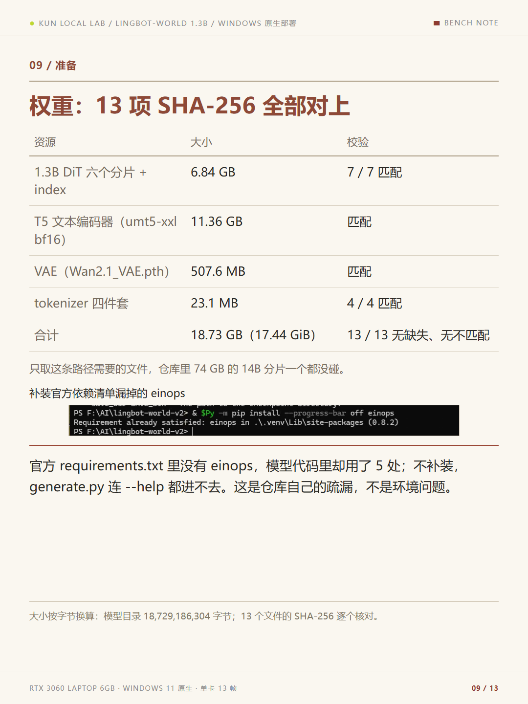
09 / 13 · 权重：13 项 SHA-256 全部对上
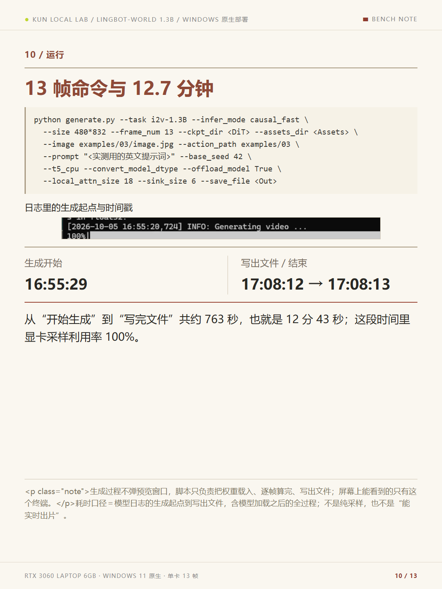
10 / 13 · 13 帧命令与 12.7 分钟
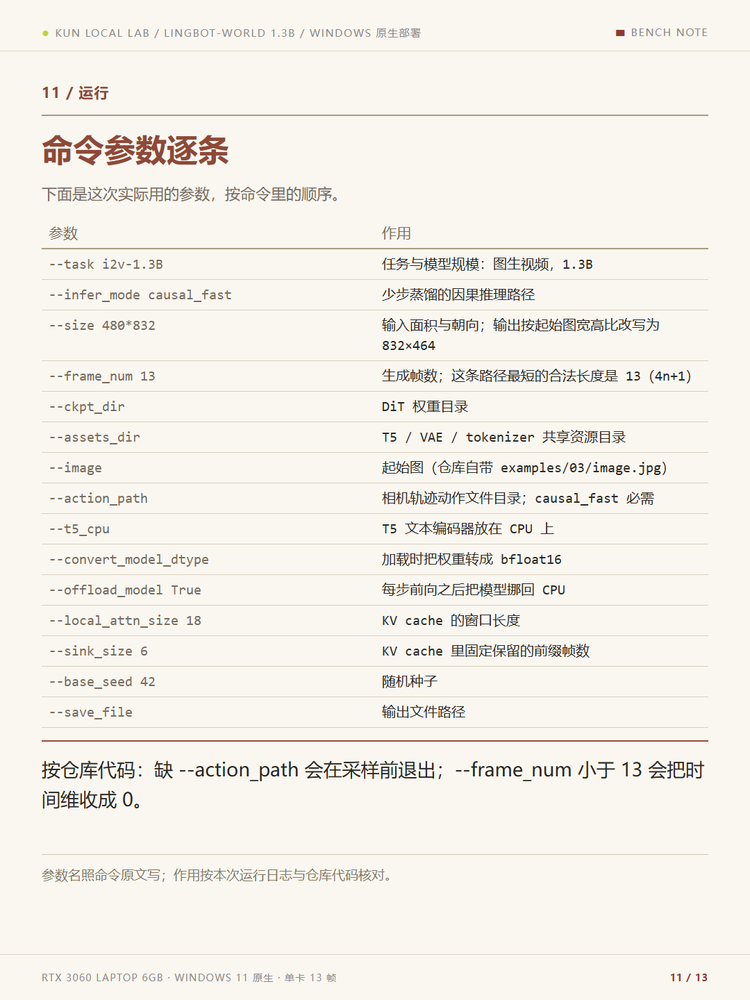
11 / 13 · 命令参数逐条
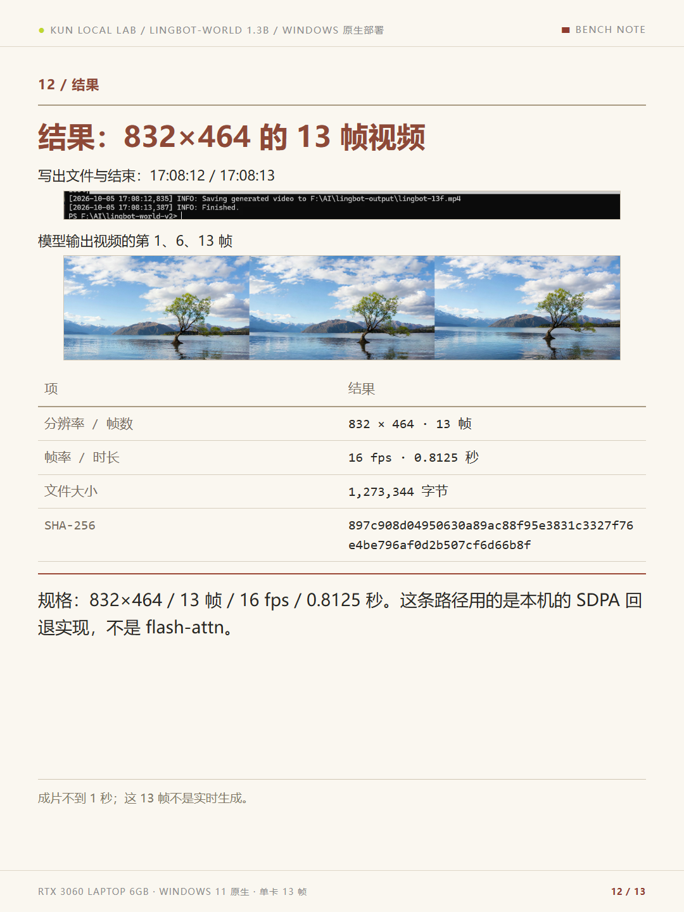
12 / 13 · 结果：832×464 的 13 帧视频
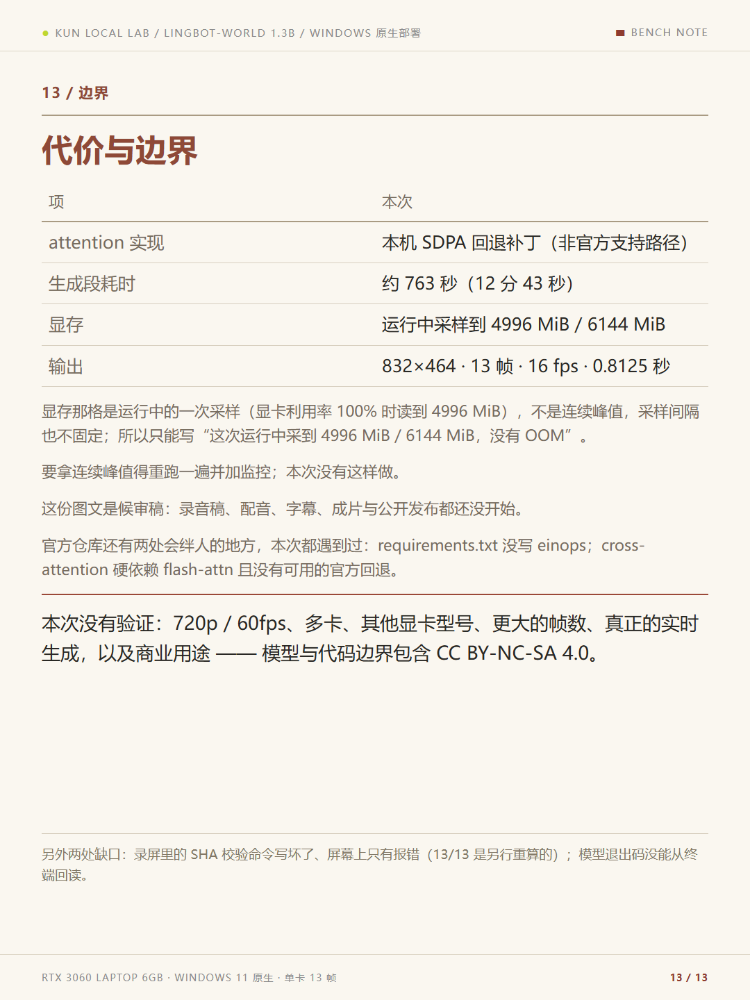
13 / 13 · 代价与边界本篇 13 页，事实源为本机实测手册、原始录屏与补丁验证记录；模型输出规格与 SHA-256 由本机复核。等待用户审核后才据它写录音稿。